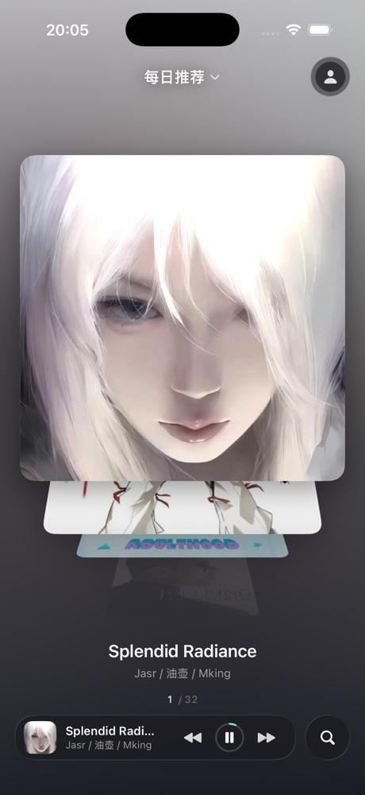
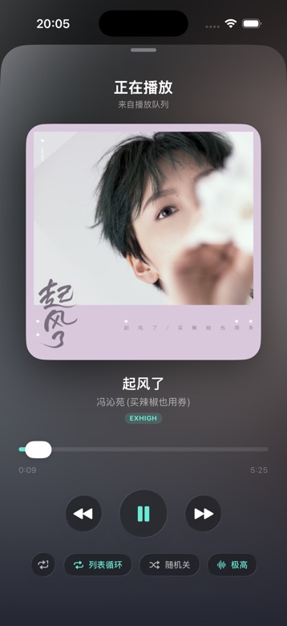
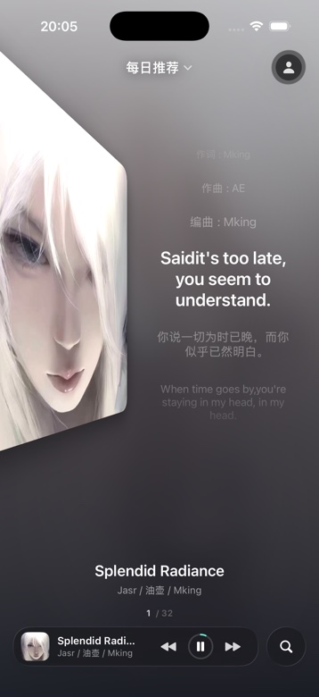
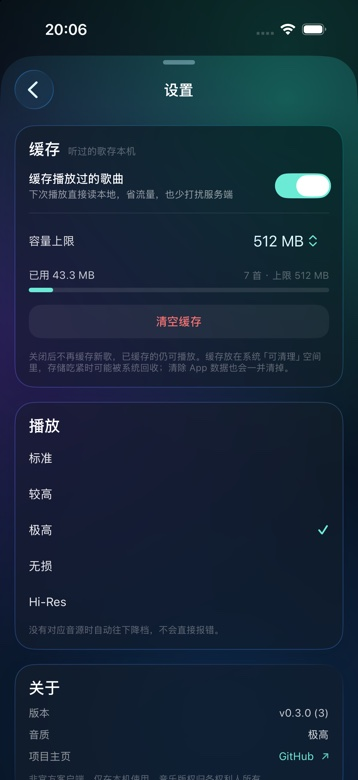

Flow Music
一摞可以翻的唱片。
首页没有列表，只有一摞立体的封面。
v0.3.0906 KBiOS 26.1 及以上iPhone

上下拖动翻牌，松手吸附到正中
牌堆就是一个歌单。
每日推荐、漫游、我喜欢的音乐、自建歌单。
正在播放哪个，首页就摆哪个。
在资料库或搜索里点播，回首页它已经换好了。

绕 X 轴旋转
相邻封面向上倒去，带一点透视。角度走 smoothstep，不会翻得夸张。
正中那张是 HDR
Core Image 提亮成 16-bit float / Display P3，亮部能越过纸白。
只建九张卡
几百首的歌单也只创建正中附近，封面降采样到 600px。
往左一滑，雾就漫上来。
不用找准封面，屏幕哪儿都能滑。
专辑侧身退到屏边，雾是它自己糊的，没有边界。
歌词一行行浮上来，唱到哪行哪行亮，点一下就跳到那句。

听过的歌，留在本机。
缓存开关、容量上限 256MB 到 2GB，用了多少一眼看得见。
再听一遍直接读本地，不重新下载。
底部只留播放条和搜索，资料库和设置都收进右上角那个头像里。

三步，装进手机。
iOS 不装未签名的包。用自己的 Apple ID 重签一次即可，不需要开发者账号。
连接 · 重签
数据线连 iPhone，把 IPA 拖进去，填 Apple ID 后 Start。开了双重认证就先在 Apple 官网生成 App 专用密码。
信任 · 打开
设置 → 通用 → VPN 与设备管理，信任证书；再到 隐私与安全性 打开开发者模式。